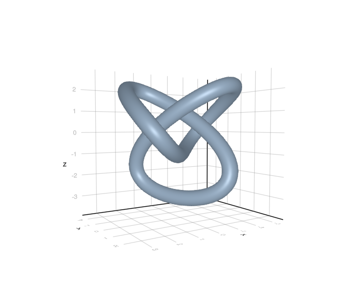

Drawing a tubular path with Julia
Posted on August 4, 2023
by Stéphane Laurent
I implemented the framed closed curves exposed in this blog post, in Julia and R. In fact it is useless with R, because the rgl function cylinder3d is faster and better.
Here is the Julia implementation:
using LinearAlgebra
using Quaternions
using Meshes
# quaternion corresponding to "the" rotation mapping u to v
function quaternionFromTo(u, v)
re = √((1.0 + u ⋅ v) / 2.0)
w = (u × v) / 2.0 / re
return QuaternionF64(re, w...)
end
# pts: points forming the path
# sides: number of sides of the tube
# radius: tube radius
# twists: number of twists
function closedTube(pts, sides, radius, twists)
n, _ = size(pts)
e = [pts[i+1, :] - pts[i, :] for i in 1:(n-1)]
push!(e, pts[1, :] - pts[n, :])
tangents = map(normalize, e)
qtangents = map(tgt -> QuaternionF64(0.0, tgt...), tangents)
dotproducts = [tangents[i+1, :] ⋅ tangents[i, :] for i in 1:(n-1)]
a = sqrt.((1 .+ dotproducts) / 2.0)
V = Vector{Vector{Float64}}(undef, n-1)
for i in 1:(n-1)
V[i] = - [imag_part(qtangents[i+1] * qtangents[i])...] /
sqrt(2.0 + 2.0*dotproducts[i])
end
Qs = [QuaternionF64(a[i], V[i]...) for i in 1:(n-1)]
# the quaternions psi_k
Qprodcuts = Vector{QuaternionF64}(undef, n-1)
Qprodcuts[1] = Qs[1]
for i in 2:(n-1)
Qprodcuts[i] = Qs[i] * Qprodcuts[i-1]
end
Psi = Vector{QuaternionF64}(undef, n)
psi0 = quaternionFromTo([1; 0; 0], tangents[1])
Psi[1] = psi0
for i in 1:(n-1)
Psi[i+1] = Qs[i] * Psi[i]
end
# angle defect omega
init = zeros(Float64, 3)
init[argmin(tangents[1])] = 1
N0 = normalize(tangents[1] × init)
qN0 = QuaternionF64(0.0, N0...)
qlast = Qprodcuts[n-1]
qNN = qlast * qN0 * conj(qlast)
NN = [imag_part(qNN)...]
x = NN ⋅ N0
T0 = normalize(NN × N0)
B0 = T0 × N0
y = NN ⋅ B0
omega = atan(y, x) + twists * 2.0 * pi
# the quaternions psiTilde_k
norms = map(v -> sqrt(v ⋅ v), e[1:(n-1)])
s = cumsum([0.0, norms...])
angles = -omega * s / (2*s[n])
PsiTilde = Vector{QuaternionF64}(undef, n)
PsiTilde[1] = Psi[1]
for i in 2:n
angle = angles[i]
PsiTilde[i] = Psi[i] *
QuaternionF64(cos(angle), sin(angle), 0.0, 0.0)
end
# mesh
R = zeros(Float64, 3, sides, n-1)
Hj = QuaternionF64(0.0, 0.0, 1.0, 0.0)
for k in 1:sides
α = (k - 1.0) / sides
r0 = QuaternionF64(cospi(α), sinpi(α), 0.0, 0.0)
r1 = r0 * Hj * conj(r0)
for j in 1:(n-1)
psi = PsiTilde[j]
R[:, k, j] = pts[j, :] +
radius * [imag_part(psi * r1 * conj(psi))...]
end
end
verts = hcat([R[:, :, i] for i in 1:(n-1)]...)
points = [verts[:, i] for i in 1:((n-1)*sides)]
quads = GridTopology((sides, n-1), (true, true))
return SimpleMesh([Meshes.Point(pt...) for pt in points], quads)
endHere is an example, a knot:
using MeshViz
using GLMakie
theta = collect(LinRange(0, 2*pi, 151)[1:150])
knot =
[
[sin.(theta) + 2*sin.(2*theta)]
, [2*sin.(3*theta)]
, [cos.(theta) - 2*cos.(2*theta)]
]
mesh = closedTube(knot, 60, 0.35, 0)
viz(mesh)
The current version of MeshViz always adds normals to the meshes, so we can’t correctly see what happens if we only set a couple of sides and if we use some twists. So let’s see what this gives with the R version, with four sides and two twists:

Below is the R code. But again, don’t use it, use rgl::cylinder3d instead.
library(onion)
library(rgl)
closedTubeMesh <- function(pts, nsides, epsilon, twist = 0) {
n <- nrow(pts)
# tangents
e <- rbind(
t(vapply(1L:(n-1L), function(i) pts[i+1L, ]-pts[i, ], numeric(3L))),
pts[1L, ]-pts[n, ]
)
nrms <- sqrt(apply(e, 1L, crossprod))
Tgs <- e / nrms
Tgs_quat <- as.quaternion(rbind(0, t(Tgs)))
# the quaternions q
sprods <- vapply(
1L:(n-1L), function(i) c(crossprod(Tgs[i+1L, ], Tgs[i, ])), numeric(1L)
)
a <- sqrt((1 + sprods) / 2)
v <- quaternion(length.out = n-1L)
for(i in 1L:(n-1L)) {
v[i] <- -1 / sqrt(2 + 2*sprods[i]) * Im(Tgs_quat[i+1L] * Tgs_quat[i])
}
q <- a + v
# the psi_k
qpr <- Conj(onion_cumprod(Conj(q)))
Psi <- quaternion(length.out = n)
psi0 <- cgalMeshes:::quaternionFromTo(c(1, 0, 0), Tgs[1L, ])
Psi[1L] <- psi0
for(i in 1L:(n-1L)) {
Psi[i+1L] <- qpr[i] * psi0
}
# omega (angle defect)
init <- c(0, 0, 0)
init[which.min(abs(Tgs[1L, ]))] <- 1
N0 <- cgalMeshes::crossProduct(Tgs[1L, ], init)
N0 <- N0 / sqrt(c(crossprod(N0)))
N0_quat <- as.quaternion(c(0, N0), single = TRUE)
qN <- qpr[n-1L]
NN_quat <- qN * N0_quat * Conj(qN)
NN <- as.numeric(NN_quat)[-1L]
x <- c(crossprod(NN, N0))
T0 <- cgalMeshes::crossProduct(NN, N0)
T0 <- T0 / sqrt(c(crossprod(T0)))
B0 <- cgalMeshes::crossProduct(T0, N0)
y <- c(crossprod(NN, B0)) # x^2+y^2=1
omega <- atan2(y, x) + twist*2*pi
# the quaternions psiTilde_k
s <- cumsum(c(0, apply(e[-n, ], 1L, crossprod)))
L <- s[n]
angles <- -omega * s / (2*L)
PsiTilde <- quaternion(length.out = n)
PsiTilde[1L] <- Psi[1L]
for(i in 2L:n) {
a <- angles[i]
PsiTilde[i] <-
Psi[i] * as.quaternion(c(cos(a), sin(a), 0, 0), single = TRUE)
}
# the mesh
nu <- n
uperiodic <- TRUE
u_ <- 1L:nu
vperiodic <- TRUE
nv <- as.integer(nsides)
v_ <- 1L:nv
R <- array(NA_real_, dim = c(3L, nv, nu))
for(k in 1L:nv) {
a <- (k - 1L) / nv
r0 <- as.quaternion(c(cospi(a), sinpi(a), 0, 0), single = TRUE)
r1 <- r0 * Hj * Conj(r0)
for(j in 1L:nu) {
psi <- PsiTilde[j]
R[, k, j] <-
pts[j, ] + epsilon * as.numeric(psi * r1 * Conj(psi))[-1L]
}
}
vs <- matrix(R, nrow = 3L, ncol = nu*nv)
tris <- cgalMeshes:::meshTopology(nu, nv, uperiodic, vperiodic)
tmesh3d(
vertices = vs,
indices = tris,
homogeneous = FALSE
)
}
################################################################################
theta <- seq(0, 2*pi, length.out = 751L)[-1L]
knot <- cbind(
sin(theta) + 2*sin(2*theta),
2*sin(3*theta),
cos(theta) - 2*cos(2*theta)
)
mesh <- closedTubeMesh(knot, nsides = 4, epsilon = 0.55, twist = 2)
shade3d(mesh, color = "green")